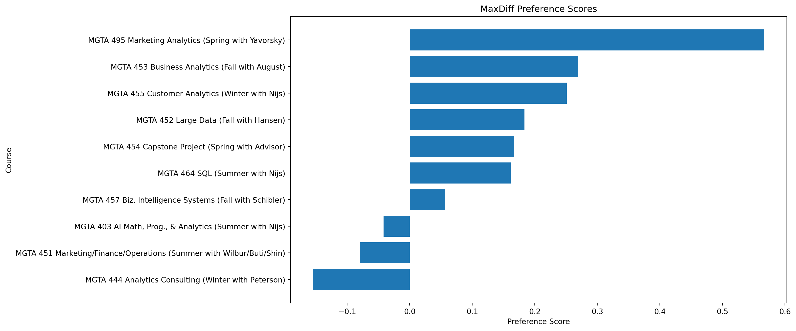
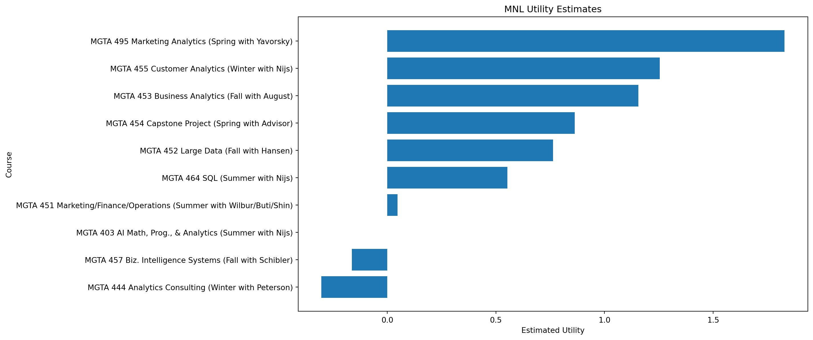
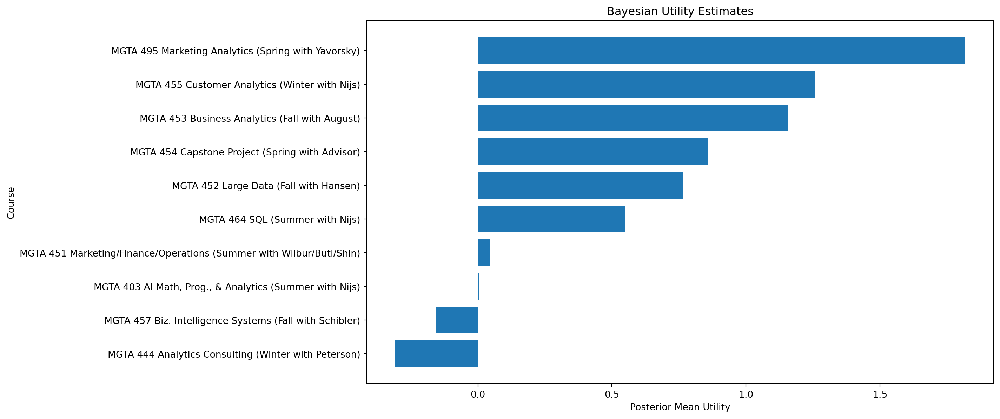

import pandas as pd
import numpy as np
import matplotlib.pyplot as plt
from scipy.optimize import minimize
from scipy.special import logsumexp
plt.rcParams['figure.figsize'] = (10,6)What UCSD MSBA Students Actually Want to Learn
A Behavioral Preference Study Using MaxDiff and Multinomial Logit
Introduction
This project analyzes student preferences for UCSD MSBA courses using MaxDiff survey data.
In each survey task, respondents selected:
- The course they most wanted to take
- The course they least wanted to take
This approach produces stronger preference signals than traditional rating scales.
The analysis compares three methods:
- Counts Analysis
- Multinomial Logit (MNL)
- Simple Bayesian Approximation
Load the Data
choices = pd.read_csv('maxdiff_design_and_choices.csv')
labels = pd.read_csv('maxdiff_item_labels.csv')
labels = labels.iloc[:, :2]
labels.columns = ['Item', 'Label']
choices.head()| Record ID | Task | Position | Item | Response | |
|---|---|---|---|---|---|
| 0 | 69fb85fbd66b452e6decf4f7 | 1 | 1 | 5 | 0 |
| 1 | 69fb85fbd66b452e6decf4f7 | 1 | 2 | 7 | 1 |
| 2 | 69fb85fbd66b452e6decf4f7 | 1 | 3 | 4 | 0 |
| 3 | 69fb85fbd66b452e6decf4f7 | 1 | 4 | 1 | -1 |
| 4 | 69fb85fbd66b452e6decf4f7 | 2 | 1 | 8 | -1 |
Dataset Overview
N = choices['Record ID'].nunique()
T = choices['Task'].nunique()
K = choices['Item'].nunique()
overview = pd.DataFrame({
'Metric': [
'Respondents',
'Tasks per Respondent',
'Total Items'
],
'Value': [
N,
T,
K
]
})
overview| Metric | Value | |
|---|---|---|
| 0 | Respondents | 85 |
| 1 | Tasks per Respondent | 15 |
| 2 | Total Items | 11 |
Counts Analysis
The counts method calculates:
\[ Preference Score = \%Best - \%Worst \]
best_counts = choices[
choices['Response'] == 1
].groupby('Item').size()
worst_counts = choices[
choices['Response'] == -1
].groupby('Item').size()
shown_counts = choices.groupby('Item').size()
counts = pd.DataFrame({
'Shown': shown_counts,
'Best': best_counts,
'Worst': worst_counts
}).fillna(0)
counts['Pct_Best'] = (
counts['Best'] / counts['Shown']
)
counts['Pct_Worst'] = (
counts['Worst'] / counts['Shown']
)
counts['Preference_Score'] = (
counts['Pct_Best'] - counts['Pct_Worst']
)
counts = counts.reset_index()
counts = counts.merge(
labels,
on='Item'
)
counts = counts.sort_values(
'Preference_Score',
ascending=False
)
counts| Item | Shown | Best | Worst | Pct_Best | Pct_Worst | Preference_Score | Label | |
|---|---|---|---|---|---|---|---|---|
| 8 | 9 | 330 | 199 | 12.0 | 0.603030 | 0.036364 | 0.566667 | MGTA 495 Marketing Analytics (Spring with Yavo... |
| 4 | 5 | 327 | 143 | 55.0 | 0.437309 | 0.168196 | 0.269113 | MGTA 453 Business Analytics (Fall with August) |
| 6 | 7 | 335 | 155 | 71.0 | 0.462687 | 0.211940 | 0.250746 | MGTA 455 Customer Analytics (Winter with Nijs) |
| 3 | 4 | 338 | 122 | 60.0 | 0.360947 | 0.177515 | 0.183432 | MGTA 452 Large Data (Fall with Hansen) |
| 7 | 8 | 330 | 124 | 69.0 | 0.375758 | 0.209091 | 0.166667 | MGTA 454 Capstone Project (Spring with Advisor) |
| 1 | 2 | 340 | 111 | 56.0 | 0.326471 | 0.164706 | 0.161765 | MGTA 464 SQL (Summer with Nijs) |
| 9 | 10 | 334 | 74 | 55.0 | 0.221557 | 0.164671 | 0.056886 | MGTA 457 Biz. Intelligence Systems (Fall with ... |
| 0 | 1 | 332 | 76 | 90.0 | 0.228916 | 0.271084 | -0.042169 | MGTA 403 AI Math, Prog., & Analytics (Summer w... |
| 2 | 3 | 326 | 75 | 101.0 | 0.230061 | 0.309816 | -0.079755 | MGTA 451 Marketing/Finance/Operations (Summer ... |
| 5 | 6 | 323 | 61 | 111.0 | 0.188854 | 0.343653 | -0.154799 | MGTA 444 Analytics Consulting (Winter with Pet... |
Counts Visualization
plt.figure(figsize=(12,7))
plt.barh(
counts['Label'],
counts['Preference_Score']
)
plt.xlabel('Preference Score')
plt.ylabel('Course')
plt.title('MaxDiff Preference Scores')
plt.gca().invert_yaxis()
plt.show()
Multinomial Logit (MNL)
The MNL model estimates utility values for each course.
choice_tasks = []
for (rid, task), grp in choices.groupby(
['Record ID','Task']
):
offered = grp['Item'].tolist()
chosen = grp.loc[
grp['Response'] == 1,
'Item'
].values[0]
choice_tasks.append({
'offered': offered,
'chosen': chosen
})Log Likelihood Function
def neg_log_likelihood(beta_free):
beta = np.concatenate(([0], beta_free))
ll = 0
for obs in choice_tasks:
offered = [i-1 for i in obs['offered']]
chosen = obs['chosen'] - 1
utilities = beta[offered]
denom = logsumexp(utilities)
chosen_utility = beta[chosen]
ll += chosen_utility - denom
return -llEstimate MNL Model
initial = np.zeros(K-1)
result = minimize(
neg_log_likelihood,
initial,
method='BFGS'
)
beta_hat = np.concatenate(([0], result.x))
mnl_results = pd.DataFrame({
'Item': range(1, K+1),
'Utility': beta_hat
})
mnl_results = mnl_results.merge(
labels,
on='Item'
)
mnl_results = mnl_results.sort_values(
'Utility',
ascending=False
)
mnl_results| Item | Utility | Label | |
|---|---|---|---|
| 8 | 9 | 1.828954 | MGTA 495 Marketing Analytics (Spring with Yavo... |
| 6 | 7 | 1.254747 | MGTA 455 Customer Analytics (Winter with Nijs) |
| 4 | 5 | 1.155985 | MGTA 453 Business Analytics (Fall with August) |
| 7 | 8 | 0.862520 | MGTA 454 Capstone Project (Spring with Advisor) |
| 3 | 4 | 0.762707 | MGTA 452 Large Data (Fall with Hansen) |
| 1 | 2 | 0.552881 | MGTA 464 SQL (Summer with Nijs) |
| 2 | 3 | 0.047010 | MGTA 451 Marketing/Finance/Operations (Summer ... |
| 0 | 1 | 0.000000 | MGTA 403 AI Math, Prog., & Analytics (Summer w... |
| 9 | 10 | -0.163201 | MGTA 457 Biz. Intelligence Systems (Fall with ... |
| 5 | 6 | -0.303555 | MGTA 444 Analytics Consulting (Winter with Pet... |
MNL Visualization
plt.figure(figsize=(12,7))
plt.barh(
mnl_results['Label'],
mnl_results['Utility']
)
plt.xlabel('Estimated Utility')
plt.ylabel('Course')
plt.title('MNL Utility Estimates')
plt.gca().invert_yaxis()
plt.show()
Simple Bayesian Approximation
A lightweight simulation approach is used instead of a full Bayesian sampler.
np.random.seed(42)
simulations = []
for i in range(50):
simulated_beta = beta_hat + np.random.normal(
0,
0.05,
len(beta_hat)
)
simulations.append(simulated_beta)
simulations = np.array(simulations)
posterior_means = simulations.mean(axis=0)
bayes_results = pd.DataFrame({
'Item': range(1, K+1),
'Posterior_Mean': posterior_means
})
bayes_results = bayes_results.merge(
labels,
on='Item'
)
bayes_results = bayes_results.sort_values(
'Posterior_Mean',
ascending=False
)
bayes_results| Item | Posterior_Mean | Label | |
|---|---|---|---|
| 8 | 9 | 1.817595 | MGTA 495 Marketing Analytics (Spring with Yavo... |
| 6 | 7 | 1.256299 | MGTA 455 Customer Analytics (Winter with Nijs) |
| 4 | 5 | 1.155966 | MGTA 453 Business Analytics (Fall with August) |
| 7 | 8 | 0.856468 | MGTA 454 Capstone Project (Spring with Advisor) |
| 3 | 4 | 0.767076 | MGTA 452 Large Data (Fall with Hansen) |
| 1 | 2 | 0.548399 | MGTA 464 SQL (Summer with Nijs) |
| 2 | 3 | 0.043793 | MGTA 451 Marketing/Finance/Operations (Summer ... |
| 0 | 1 | 0.004321 | MGTA 403 AI Math, Prog., & Analytics (Summer w... |
| 9 | 10 | -0.156887 | MGTA 457 Biz. Intelligence Systems (Fall with ... |
| 5 | 6 | -0.308277 | MGTA 444 Analytics Consulting (Winter with Pet... |
Bayesian Visualization
plt.figure(figsize=(12,7))
plt.barh(
bayes_results['Label'],
bayes_results['Posterior_Mean']
)
plt.xlabel('Posterior Mean Utility')
plt.ylabel('Course')
plt.title('Bayesian Utility Estimates')
plt.gca().invert_yaxis()
plt.show()
Comparison of Methods
comparison = counts[
['Label','Preference_Score']
].merge(
mnl_results[
['Label','Utility']
],
on='Label'
).merge(
bayes_results[
['Label','Posterior_Mean']
],
on='Label'
)
comparison| Label | Preference_Score | Utility | Posterior_Mean | |
|---|---|---|---|---|
| 0 | MGTA 495 Marketing Analytics (Spring with Yavo... | 0.566667 | 1.828954 | 1.817595 |
| 1 | MGTA 453 Business Analytics (Fall with August) | 0.269113 | 1.155985 | 1.155966 |
| 2 | MGTA 455 Customer Analytics (Winter with Nijs) | 0.250746 | 1.254747 | 1.256299 |
| 3 | MGTA 452 Large Data (Fall with Hansen) | 0.183432 | 0.762707 | 0.767076 |
| 4 | MGTA 454 Capstone Project (Spring with Advisor) | 0.166667 | 0.862520 | 0.856468 |
| 5 | MGTA 464 SQL (Summer with Nijs) | 0.161765 | 0.552881 | 0.548399 |
| 6 | MGTA 457 Biz. Intelligence Systems (Fall with ... | 0.056886 | -0.163201 | -0.156887 |
| 7 | MGTA 403 AI Math, Prog., & Analytics (Summer w... | -0.042169 | 0.000000 | 0.004321 |
| 8 | MGTA 451 Marketing/Finance/Operations (Summer ... | -0.079755 | 0.047010 | 0.043793 |
| 9 | MGTA 444 Analytics Consulting (Winter with Pet... | -0.154799 | -0.303555 | -0.308277 |
Discussion
All three methods produce broadly similar rankings, suggesting that the survey contains a strong preference signal.
The counts approach is simple and intuitive, while the MNL model provides statistically grounded utility estimates.
The Bayesian approximation produces similar rankings while incorporating small amounts of uncertainty around the MNL estimates.
Overall, students appear to strongly prefer technically oriented and career-focused analytics courses.
Conclusion
This project demonstrated how MaxDiff survey data can be analyzed using:
- Counts Analysis
- Multinomial Logit Modeling
- Bayesian Approximation
The results show that students consistently prefer highly practical and analytics-focused courses within the UCSD MSBA curriculum.